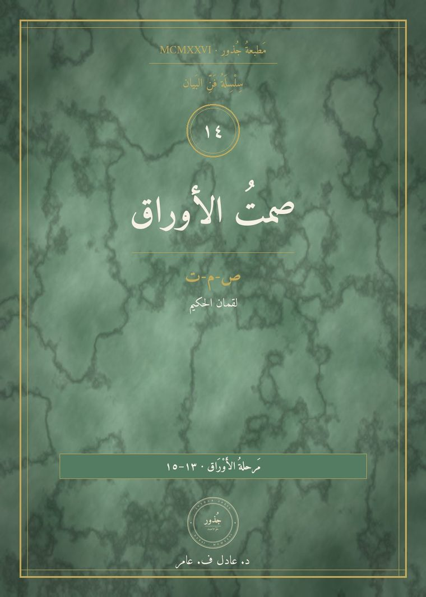
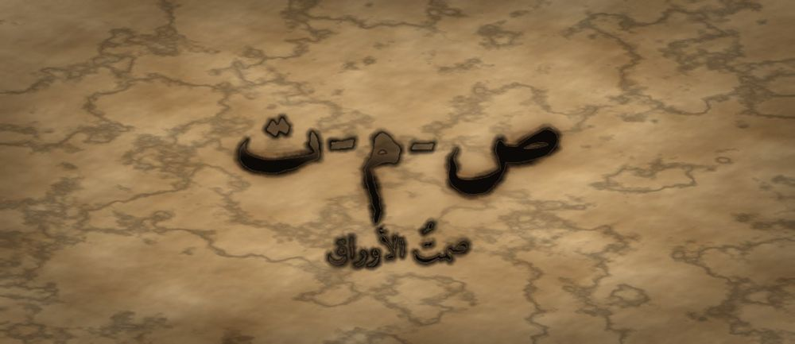

مَطبعةُ جُذور · دبي · MCMXXVI · سِلْسِلَةُ فَنِّ البَيان

مَرحلةُ الأَوْرَاق · الفئة ١٣–١٥ · الجذر ص-م-ت · لقمان الحكيم
❦ ✦ ❧
«لِصَمْتِي مَعْنًى — وَلَيْسَ كُلُّ فَرَاغٍ يُمْلَأُ بِالْكَلَامِ»

الصَّمْتُ لَيْسَ غِيَابَ الْكَلَامِ، بَلْ حُضُورُهُ الْمُؤَجَّلُ. حِينَ يَتَعَلَّمُ الْيَافِعُ أَنْ يَحْبِسَ الْجُمْلَةَ الْأُولَى الَّتِي تَقْفِزُ إِلَى لِسَانِهِ، يَكْتَشِفُ أَنَّ تَحْتَهَا جُمْلَةً أَصْدَقَ. الصَّمْتُ الْوَاعِي مَسَافَةٌ يَخْتَارُهَا صَاحِبُهَا، لَا فَرَاغٌ يُفْرَضُ عَلَيْهِ.
| المستوى / الدرجة | أَوْرَاق — وَرَقَةٌ تَسْكُنُ (الدرجةُ الثالثةُ في مستوى الأوراقِ) |
| الفئة العمرية | ١٣–١٥ سنة · نطاقُ تداخلٍ يمتدُّ إلى ١٦ للمتعلّمِ المتقدّمِ |
| الجذر الأساسي | ص – م – ت · الصَّمْتُ: كَلَامٌ يَنْتَظِرُ وَقْتَهُ |
| أسرة الجذر | صَمْت · صَمَتَ · صَامِت · صُمُوت · إِصْمَات · مُصْمَت |
| المحطّة | الصَّمْتُ — المسافةُ الواعيةُ بينَ ما نسمعُهُ وما نقولُهُ |
| المرساة الحسّيّة | الطفلُ يضعُ راحتَيْهِ على رُكبتَيْهِ ويعدُّ ثلاثَ ثوانٍ قبلَ الجوابِ |
| الاستعارة | الشجرةُ لا تُحرِّكُ أوراقَها كلَّها في كلِّ نسمةٍ؛ بعضُها يسكنُ ليُسمَعَ صوتُ الريحِ |
| الشخصيتان الحكيمتان | لُقمانُ الحكيمُ (رمزُ الحكمةِ الموجزةِ) + الجَدّةُ رملة |
| الشخصية الرمزيّة | نورُ الأوراقِ — بطلةُ السلسلةِ في مرحلةِ الأوراقِ |
| الشخصية المضادّة | الصَّدَى الثَّرْثَارُ — شخصيّةٌ رمزيّةٌ (لا تاريخيّةٌ) تُمثِّلُ ملْءَ كلِّ فراغٍ بالكلامِ، وتتعلّمُ الانتظارَ |
| المهارة (فعل) | أَصْمُتُ — الحلقةُ الرابعةَ عشرةَ في القوسِ التراكميِّ للسلسلةِ |
| المرجعُ النظريّ | استرشادًا بـ TRT — نظرية القراءة الملموسة · ومجالُ الوعيِ الاجتماعيِّ العميقِ |
| حدّ اللمس | كلُّ حركةٍ يؤدّيها اليافعُ بنفسِهِ؛ لا تلمسُ يدُ المرافقِ جسدَهُ، وأيُّ لمسٍ بينَ الأقرانِ اختياريٌّ بموافقةٍ صريحةٍ |
| ملاحظة القياس | المؤشّراتُ وصفيّةٌ للرصدِ والوصفِ، تُقرأُ نموًّا لا تُستعمَلُ بوّابةً |
لُقمانُ شخصيّةٌ حكيمةٌ ذُكِرَتْ في القرآنِ الكريمِ في سورةٍ تحملُ اسمَهُ، واشتهرَ في التراثِ العربيِّ بوصايا موجزةٍ لابنِهِ تجمعُ العلمَ بالأدبِ. وقد جرى في كتبِ الأدبِ نسبةُ أمثالٍ كثيرةٍ إليهِ. نستلهمُ منهُ هنا: أنَّ قِصَرَ العبارةِ لا يُنقِصُ معناها، وأنَّ الحكيمَ يزنُ كلمتَهُ قبلَ أنْ يُطلِقَها.
الشَّخْصِيَّةُ المُضَادَّة — الصَّدَى الثَّرْثَارُ — شخصيّةٌ رمزيّةٌ لا تاريخيّةٌ، يسكنُ الوادي ويردُّ كلَّ صوتٍ فورًا ويُضيفُ إليهِ، لأنَّهُ يظنُّ أنَّ السكوتَ اختفاءٌ. لا يُهزَمُ ولا يُشيطَنُ؛ بل يتعلَّمُ في النهايةِ أنْ يتأخّرَ لحظةً، فيكتشفُ أنَّ الوادي حينَ يهدأُ يسمعُ الناسُ صوتَهُ الحقيقيَّ لا تكرارَهُ.
ص-م-ت — صَمْت · صَمَتَ · صَامِت · صُمُوت · إِصْمَات · مُصْمَت
الجذرُ (ص-م-ت) سالمٌ صحيحُ الحروفِ، ومعناهُ المحوريُّ يدورُ على السكونِ والانغلاقِ التامِّ؛ ومنهُ «مُصْمَت» أي المُصْمَتُ الذي لا جوفَ فيهِ. يلاحظُ المعلّمُ الفرقَ بينَ «صَامِت» اسمِ فاعلٍ يصفُ حالًا، و«صُمُوت» مصدرٍ يصفُ طبعًا مستمرًّا؛ وفي هذا الفرقِ درسٌ: الصمتُ فعلٌ يُختارُ لا صفةٌ تُلصَقُ بشخصٍ.
صَارَتْ لِنُورَ أَوْرَاقٌ كَثِيرَةٌ، وَصَارَ لَهَا رَأْيٌ فِي كُلِّ شَيْءٍ. كَانَتْ فِي حَلْقَةِ الْحَدِيقَةِ، تَتَكَلَّمُ الْأَغْصَانُ وَتَرُدُّ هِيَ قَبْلَ أَنْ يَنْتَهِيَ الْكَلَامُ. وَكُلَّمَا سَكَتَ أَحَدٌ لَحْظَةً، أَسْرَعَتْ نُورُ فَمَلَأَتِ السُّكُوتَ بِجُمْلَةٍ. وَفِي آخِرِ الْيَوْمِ، جَلَسَتْ وَحْدَهَا وَهِيَ مُتْعَبَةٌ. حَاوَلَتْ أَنْ تَتَذَكَّرَ مَاذَا قَالَتِ الْأَغْصَانُ، فَلَمْ تَتَذَكَّرْ شَيْئًا. تَذَكَّرَتْ فَقَطْ مَا قَالَتْهُ هِيَ. وَهَمَسَتْ لِنَفْسِهَا: «تَكَلَّمْتُ كَثِيرًا... فَلِمَاذَا أَشْعُرُ أَنَّنِي لَمْ أَقُلْ شَيْئًا؟» كَانَتِ الْأَوْرَاقُ حَوْلَهَا سَاكِنَةً، وَكَانَ سُكُونُهَا يَبْدُو لَهَا لُغَةً لَا تَفْهَمُهَا بَعْدُ. وَمَرَّتْ نَسْمَةٌ خَفِيفَةٌ فَتَحَرَّكَتْ وَرَقَتَانِ فَقَطْ مِنْ بَيْنِ مِئَاتِ الْأَوْرَاقِ، وَبَقِيَ سَائِرُهَا سَاكِنًا. تَأَمَّلَتْ نُورُ ذَلِكَ طَوِيلًا وَقَالَتْ: «كَيْفَ تَعْرِفُ الشَّجَرَةُ أَيَّ وَرَقَةٍ تُحَرِّكُ؟» وَلَمْ تَجِدْ جَوَابًا فِي تِلْكَ اللَّيْلَةِ، لَكِنَّ السُّؤَالَ بَقِيَ مَعَهَا.
فِي الْوَادِي الْقَرِيبِ سَكَنَ الصَّدَى الثَّرْثَارُ. كَانَ لَا يَحْتَمِلُ لَحْظَةَ هُدُوءٍ وَاحِدَةً؛ فَمَا إِنْ يَنْطِقَ أَحَدٌ حَتَّى يَرُدَّ فَوْرًا، وَيُضِيفَ، وَيُكَرِّرَ. قَالَ لِنُورَ: «السُّكُوتُ خَطَرٌ يَا نُورُ! مَنْ سَكَتَ نُسِيَ، وَمَنْ تَأَخَّرَ فِي الْجَوَابِ ظَنُّوهُ لَا يَعْرِفُ. اِمْلَئِي كُلَّ فَرَاغٍ بِصَوْتِكِ، وَإِلَّا مَلَأَهُ غَيْرُكِ!» وَكَانَ فِي دَاخِلِهِ خَوْفٌ لَا يَقُولُهُ: يَخَافُ أَنْ يَصْمُتَ فَيَكْتَشِفَ أَنَّهُ بِلَا صَوْتٍ خَاصٍّ بِهِ. فَجَرَّبَتْ نُورُ نَصِيحَتَهُ يَوْمًا كَامِلًا، فَعَادَتْ مَسَاءً وَحَلْقُهَا مُتْعَبٌ، وَقَلْبُهَا أَشَدُّ تَعَبًا، وَلَا جُمْلَةَ وَاحِدَةً تَسْتَحِقُّ أَنْ تُحْفَظَ. وَقَالَ لَهَا فِي آخِرِ النَّهَارِ: «أَرَأَيْتِ؟ لَمْ يَسْكُتْ أَحَدٌ مَعَنَا الْيَوْمَ!» فَنَظَرَتْ نُورُ حَوْلَهَا فَلَمْ تَجِدْ أَحَدًا أَصْلًا. كَانَ الْجَمِيعُ قَدِ انْصَرَفُوا وَاحِدًا وَاحِدًا، وَبَقِيَ الصَّدَى يَتَكَلَّمُ مَعَ نَفْسِهِ وَيَحْسَبُ ذَلِكَ نَجَاحًا.
جَلَسَ تَحْتَ الشَّجَرَةِ لُقْمَانُ الْحَكِيمُ، وَمَعَهُ الْجَدَّةُ رَمْلَةُ الَّتِي عَرَفْنَاهَا مِنْ قَبْلُ. قَالَ لُقْمَانُ: «يَا نُورُ، الْكَلَامُ كَالْمَاءِ؛ إِنْ صَبَبْتِهِ كُلَّهُ دَفْعَةً وَاحِدَةً جَرَفَ التُّرَابَ، وَإِنْ أَمْسَكْتِهِ قَلِيلًا شَرِبَتْهُ الْجُذُورُ.» ثُمَّ قَالَتِ الْجَدَّةُ: «جَرِّبِي مَعِي. سَأَقُولُ لَكِ كَلِمَةً، وَقَبْلَ أَنْ تُجِيبِي ضَعِي رَاحَتَيْكِ عَلَى رُكْبَتَيْكِ وَعُدِّي: وَاحِدٌ، اثْنَانِ، ثَلَاثَةٌ. لَا لِتَسْكُتِي، بَلْ لِتَخْتَارِي.» قَالَتِ الْجَدَّةُ جُمْلَةً، وَعَدَّتْ نُورُ فِي سِرِّهَا. وَفِي الثَّانِيَةِ الثَّالِثَةِ حَدَثَ شَيْءٌ غَرِيبٌ: الْجُمْلَةُ الْأُولَى الَّتِي كَانَتْ عَلَى طَرَفِ لِسَانِهَا ذَهَبَتْ، وَظَهَرَتْ تَحْتَهَا جُمْلَةٌ أَهْدَأُ وَأَصْدَقُ. فَتَحَ لُقْمَانُ كَفَّهُ وَقَالَ: «الثَّوَانِي الثَّلَاثُ لَيْسَتْ حَاجِزًا بَيْنَكِ وَبَيْنَ النَّاسِ، بَلْ مِصْفَاةٌ بَيْنَكِ وَبَيْنَ أَوَّلِ خَاطِرٍ يَقْفِزُ إِلَى لِسَانِكِ. وَأَوَّلُ الْخَوَاطِرِ أَسْرَعُهَا، وَلَيْسَ أَصْدَقَهَا دَائِمًا.»
أَعَادَتْ نُورُ التَّجْرِبَةَ وَحْدَهَا. وَضَعَتْ رَاحَتَيْهَا عَلَى رُكْبَتَيْهَا، وَسَمِعَتْ غُصْنًا يَقُولُ رَأْيًا لَا يُعْجِبُهَا. اِنْدَفَعَ فِي صَدْرِهَا رَدٌّ حَادٌّ، فَعَدَّتْ: وَاحِدٌ... اثْنَانِ... ثَلَاثَةٌ. فِي «وَاحِدٍ» كَانَ الرَّدُّ غَاضِبًا. وَفِي «اثْنَيْنِ» صَارَ أَقْصَرَ. وَفِي «ثَلَاثَةٍ» صَارَ سُؤَالًا: «هَلْ تَقْصِدُ أَنَّكَ خِفْتَ؟» فَنَظَرَ إِلَيْهَا الْغُصْنُ نَظْرَةً لَمْ تَرَهَا مِنْهُ قَبْلَ ذَلِكَ، وَقَالَ: «نَعَمْ... كَيْفَ عَرَفْتِ؟» فَعَرَفَتْ نُورُ أَنَّ صَمْتَهَا الْقَصِيرَ لَمْ يَكُنْ فَرَاغًا؛ كَانَ الْمَكَانَ الَّذِي وُلِدَ فِيهِ سُؤَالُهَا. وَقَالَتْ فِي نَفْسِهَا: «لِصَمْتِي مَعْنًى.» ثُمَّ جَرَّبَتْ مَرَّةً ثَالِثَةً مَعَ عُشْبَةٍ صَغِيرَةٍ كَانَتْ تَشْكُو، فَعَدَّتْ ثَلَاثًا وَلَمْ تَنْصَحْهَا بِشَيْءٍ، فَقَالَتِ الْعُشْبَةُ: «شُكْرًا... لَمْ يَتْرُكْنِي أَحَدٌ أُكْمِلُ قَبْلَكِ.» فَعَرَفَتْ نُورُ أَنَّ لِلصَّمْتِ عَطَاءً لَا يَقْدِرُ عَلَيْهِ الْكَلَامُ.
عَادَتْ نُورُ إِلَى الْوَادِي، فَوَجَدَتِ الصَّدَى الثَّرْثَارَ يَرُدُّ عَلَى صَوْتِ الرِّيحِ وَعَلَى صَوْتِ الْحَجَرِ وَعَلَى صَوْتِ نَفْسِهِ. فَلَمْ تُجَادِلْهُ. جَلَسَتْ وَسَكَتَتْ. تَكَلَّمَ الصَّدَى، فَلَمْ تَرُدَّ. تَكَلَّمَ ثَانِيَةً، فَلَمْ تَرُدَّ. وَفِي الثَّالِثَةِ سَكَتَ هُوَ أَيْضًا — لِأَوَّلِ مَرَّةٍ. وَفِي ذَلِكَ السُّكُونِ سَمِعَ شَيْئًا لَمْ يَسْمَعْهُ طُولَ عُمْرِهِ: صَوْتَ الْمَاءِ تَحْتَ الْحَجَرِ. وَهَمَسَ فِي دَهْشَةٍ: «كَانَ هَذَا هُنَا مُنْذُ زَمَنٍ... وَأَنَا أُغَطِّيهِ بِصَوْتِي.» فَقَالَتْ نُورُ بِهُدُوءٍ: «لَسْتَ مُطَالَبًا أَنْ تَمْلَأَ كُلَّ فَرَاغٍ. بَعْضُ الْفَرَاغِ بَابٌ.» ثُمَّ جَلَسَا مَعًا لَا يَقُولَانِ شَيْئًا، وَالْمَاءُ يَجْرِي تَحْتَ الْحَجَرِ. وَبَعْدَ حِينٍ قَالَ الصَّدَى: «أَنَا خِفْتُ أَنْ يَنْسَانِي النَّاسُ إِنْ سَكَتُّ.» قَالَتْ نُورُ: «وَقَدْ نَسُوكَ وَأَنْتَ تَتَكَلَّمُ. جَرِّبِ الْآنَ أَنْ تَقُولَ شَيْئًا وَاحِدًا فَقَطْ، وَانْظُرْ كَمْ سَيَبْقَى فِي آذَانِهِمْ.»
فِي الْمَسَاءِ، جَلَسَتْ نُورُ وَالْجَدَّةُ رَمْلَةُ مُتَقَابِلَتَيْنِ. قَالَتِ الْجَدَّةُ: «الصَّمْتُ نَوْعَانِ يَا نُورُ: صَمْتٌ تَخْتَارُهُ، وَصَمْتٌ يُفْرَضُ عَلَيْكِ. الْأَوَّلُ قُوَّةٌ، وَالثَّانِي ظُلْمٌ. فَإِنْ أَسْكَتَكِ أَحَدٌ لِتَخَافِي، فَذَلِكَ لَيْسَ الصَّمْتَ الَّذِي نُعَلِّمُهُ.» ثُمَّ قَالَتْ: «ضَعِي رَاحَتَيْكِ عَلَى رُكْبَتَيْكِ، وَعُدِّي ثَلَاثًا، وَاسْأَلِي نَفْسَكِ سُؤَالًا وَاحِدًا: هَلْ كَلَامِي الْآنَ أَجْمَلُ مِنْ سُكُوتِي؟» عَدَّتْ نُورُ، وَابْتَسَمَتْ، وَلَمْ تَقُلْ شَيْئًا. فَقَالَتِ الْجَدَّةُ: «هَذَا جَوَابٌ.» وَفَوْقَهُمَا كَانَتِ الْأَوْرَاقُ سَاكِنَةً، وَكَانَ سُكُونُهَا — لِأَوَّلِ مَرَّةٍ — لُغَةً تَفْهَمُهَا نُورُ. وَقَبْلَ أَنْ تَنَامَ، كَتَبَتْ نُورُ فِي دَفْتَرِهَا سَطْرًا وَاحِدًا: «الْيَوْمَ سَكَتُّ ثَلَاثَ مَرَّاتٍ عَنْ قَصْدٍ، وَنَدِمْتُ عَلَى وَاحِدَةٍ مِنْهُنَّ — وَكَانَتِ الَّتِي سَكَتُّ فِيهَا عَنْ ظُلْمٍ رَأَيْتُهُ.» ثُمَّ أَضَافَتْ: «فَلْأَتَعَلَّمْ مَتَى أَصْمُتُ، وَمَتَى يَكُونُ الصَّمْتُ خِيَانَةً.»
كَانَتْ نُورُ تَرُدُّ عَلَى كُلِّ كَلِمَةٍ قَبْلَ أَنْ تَنْتَهِيَ. وَفِي الْمَسَاءِ لَمْ تَتَذَكَّرْ مَا قَالَهُ أَحَدٌ. قَالَ لَهَا الصَّدَى الثَّرْثَارُ: «اِمْلَئِي كُلَّ فَرَاغٍ بِصَوْتِكِ!» فَجَرَّبَتْ، فَتَعِبَتْ. جَلَسَ لُقْمَانُ الْحَكِيمُ وَالْجَدَّةُ رَمْلَةُ مَعَهَا وَقَالَا: «ضَعِي رَاحَتَيْكِ عَلَى رُكْبَتَيْكِ، وَعُدِّي ثَلَاثًا قَبْلَ أَنْ تُجِيبِي — لَا لِتَسْكُتِي، بَلْ لِتَخْتَارِي.» فَفَعَلَتْ نُورُ. وَفِي الثَّانِيَةِ الثَّالِثَةِ ذَهَبَتِ الْجُمْلَةُ الْغَاضِبَةُ، وَجَاءَ سُؤَالٌ هَادِئٌ: «هَلْ تَقْصِدُ أَنَّكَ خِفْتَ؟» فَانْفَتَحَ الْقَلْبُ. ثُمَّ عَادَتْ إِلَى الْوَادِي وَسَكَتَتْ، فَسَكَتَ الصَّدَى مَعَهَا، وَسَمِعَ لِأَوَّلِ مَرَّةٍ صَوْتَ الْمَاءِ تَحْتَ الْحَجَرِ. وَقَالَتْ نُورُ: «لِصَمْتِي مَعْنًى — وَلَيْسَ كُلُّ فَرَاغٍ يُمْلَأُ بِالْكَلَامِ.» وَفِي دَفْتَرِهَا كَتَبَتْ سَطْرًا آخَرَ: «نَدِمْتُ الْيَوْمَ عَلَى صَمْتٍ وَاحِدٍ — حِينَ رَأَيْتُ ظُلْمًا وَسَكَتُّ.» فَعَرَفَتْ أَنَّ الصَّمْتَ الَّذِي تَخْتَارُهُ قُوَّةٌ، وَأَنَّ الصَّمْتَ الَّذِي يُفْرَضُ عَلَيْكَ لِتَخَافَ لَيْسَ مِنْ هَذَا الْبَابِ فِي شَيْءٍ. وَمُنْذُ ذَلِكَ الْيَوْمِ صَارَتْ تَعُدُّ ثَلَاثًا قَبْلَ أَنْ تُجِيبَ، لَا لِتَسْكُتَ، بَلْ لِتَخْتَارَ.
يجلسُ اليافعُ معتدلًا ويضعُ راحتَيْهِ على رُكبتَيْهِ بنفسِهِ، ثمَّ يعدُّ في سرِّهِ: واحدٌ، اثنانِ، ثلاثةٌ، ويُلاحِظُ بأصابعِهِ ثقلَ راحتَيْهِ على الرُّكبتينِ. هذا الثقلُ هو المرساةُ: ما دامتِ الراحتانِ ساكنتينِ فالجوابُ ما زالَ يُختارُ. فإذا انتهى العدُّ رفعَ راحتَهُ اليمنى وتكلَّمَ. لا حبسَ نفَسٍ في هذا التمرينِ إطلاقًا؛ التنفُّسُ طبيعيٌّ خلالَ العدِّ كلِّهِ.
| المُخرَجُ اللُّغَويُّ | «لِصَمْتِي مَعْنًى» — يقولُها اليافعُ لنفسِهِ قبلَ أنْ يُجيبَ في نقاشٍ متوتّرٍ، فتصيرُ إشارةَ اختيارٍ لا إشارةَ انسحابٍ |
| الحركةُ الجسديّةُ | راحتانِ على الرُّكبتينِ وعدٌّ صامتٌ إلى ثلاثٍ قبلَ الجوابِ؛ يؤدّيها اليافعُ بنفسِهِ دونَ أيِّ لمسٍ من المرافقِ |
| الدفءُ العلائقيُّ | «جولةُ الثلاثِ ثوانٍ»: في نقاشٍ ثنائيٍّ، لا يردُّ أحدُهما إلّا بعدَ ثلاثِ ثوانٍ من انتهاءِ الآخرِ؛ يلاحظانِ معًا كيفَ تغيّرَ الكلامُ |
| البديلُ الحسّيُّ | ساعةٌ رمليّةٌ صغيرةٌ أو بطاقةٌ ملوّنةٌ تُرفَعُ بمعنى «أُفكِّرُ الآنَ» — لمن يصعبُ عليهِ العدُّ الذهنيُّ أو يقلقُ من السكوتِ |
| الجسرُ الإنجليزيُّ | «My silence has meaning.» — تُقالُ بالنبرةِ الهادئةِ نفسِها لتثبيتِ التوازنِ اللُّغَويِّ بينَ اللسانينِ |
| قبل الجلسة | ضعوا الأجهزةَ في صندوقٍ مغلقٍ، ثمَّ اجلسوا دقيقةً واحدةً دونَ كلامٍ، واستمعوا لأصغرِ صوتٍ في البيتِ. اسألوا بعدَها: «ماذا سمعتُم ممّا لا نسمعُهُ عادةً؟» هذا يُهيّئُ الأذنَ لتقديرِ الفراغِ قبلَ أنْ نتعلّمَ استعمالَهُ. |
| أثناء الجلسة | طبِّقوا قاعدةَ الثلاثِ ثوانٍ على أنفسِكم أوّلًا وبصورةٍ ظاهرةٍ. لا تُعلِّقوا على طولِ صمتِ اليافعِ ولا تُسمُّوهُ «خجولًا». إذا اختارَ ألّا يتكلَّمَ فذلكَ نجاحٌ للمهارةِ لا فشلٌ فيها. |
| بعد الجلسة | في نهايةِ اليومِ اسألوا سؤالًا واحدًا: «متى سكتَّ اليومَ وكانَ سكوتُكَ أفضلَ من كلامِكَ؟ ومتى ندِمتَ على سكوتِكَ؟» السؤالُ الثاني مهمٌّ: فهو يمنعُ فهمَ الصمتِ على أنّهُ تنازلٌ دائمٌ. |
| ما تُلاحِظُه | ماذا يعني |
|---|---|
| يتوقّفُ لحظةً قبلَ الردِّ في نقاشٍ فيهِ توتُّرٌ | بدأَ يفصلُ بينَ الانفعالِ والجوابِ — وصفٌ لنموٍّ في ضبطِ الاندفاعِ، يُسجَّلُ ولا يُقاسُ بهِ انتقالٌ |
| يسألُ سؤالًا بدلَ أنْ يردَّ اعتراضًا | الصمتُ عندَهُ صارَ مساحةَ فضولٍ لا مساحةَ انسحابٍ |
| يُعبِّرُ بكلماتِهِ عن الفرقِ بينَ صمتٍ يختارُهُ وصمتٍ يُفرَضُ عليهِ | وعيٌ ناضجٌ بحدودِ المهارةِ، ويحمي من استعمالِ الصمتِ ضدَّهُ |
| يحتملُ فراغًا قصيرًا في المجلسِ دونَ أنْ يملأَهُ | ارتاحَ لعدمِ الحاجةِ إلى إثباتِ حضورِهِ بالكلامِ |
| الكلمة | المعنى |
|---|---|
| صَمْتٌ | أنْ تختارَ ألّا تتكلَّمَ الآنَ |
| صَامِتٌ | الساكتُ في هذهِ اللحظةِ لا في طبعِهِ كلِّهِ |
| صُمُوتٌ | كثرةُ الصمتِ حتى تصيرَ طبعًا |
| مُصْمَتٌ | الشيءُ المُصْمَتُ الذي لا فراغَ في داخلِهِ |
| مُهْلَةٌ | وقتٌ قصيرٌ نأخذُهُ قبلَ الجوابِ |
| إِصْغَاءٌ | أنْ تُعطيَ أُذنَكَ وقلبَكَ لمن يتكلَّمُ |
| عربي | English |
|---|---|
| صَمْتٌ | silence |
| مُهْلَةٌ | pause |
| إِصْغَاءٌ | listening |
| ثَرْثَرَةٌ | chatter |
| اِخْتِيَارٌ | choice |
| لِصَمْتِي مَعْنًى | My silence has meaning |
| نشاطٌ فنّيّ | «خريطةُ الفراغِ»: يرسمُ اليافعُ حوارًا حدثَ معهُ اليومَ على شكلِ خطٍّ، ويلوّنُ مواضعَ الصمتِ بلونٍ مختلفٍ. ثمَّ ينظرُ: أينَ كانَ الفراغُ نافعًا وأينَ كانَ ثقيلًا؟ |
| نشاطٌ تمثيليّ | «مشهدُ الثلاثِ ثوانٍ»: يؤدّي اثنانِ حوارًا مرّتينِ؛ الأولى بالردِّ الفوريِّ، والثانيةَ بعدَ عدٍّ صامتٍ إلى ثلاثٍ. يتبادلانِ الدورَيْنِ ثمَّ يصفانِ الفرقَ دونَ مقارنةِ أحدِهما بالآخرِ. |
إلى الوراءِ — السفرُ الثالثَ عشرَ («خلافُ الأوراقِ»): تعلَّمتَ أنْ تختلفَ دونَ أنْ تجرحَ، والآنَ تتعلَّمُ متى يكونُ تأجيلُ الخلافِ لحظةً أنفعَ من إعلانِهِ فورًا. إلى الأمامِ — السفرُ الخامسَ عشرَ («شورى الأوراقِ»): من عرفَ كيفَ يصمتُ صارَ قادرًا على أنْ يُصغيَ لآراءِ الجماعةِ؛ والشورى لا تنعقدُ إلّا في مجلسٍ فيهِ فراغٌ يتّسعُ لصوتِ الآخرِ.
مَطبعةُ جُذور · دبي · MCMXXVI · صمّمه وطوّره د. عادل ف. عامر
Designed and developed by Dr. Adel F. Amer · Amer (2024) · CC BY-NC-SA 4.0
↤ عودةٌ إلى خِزانةِ الأسفار